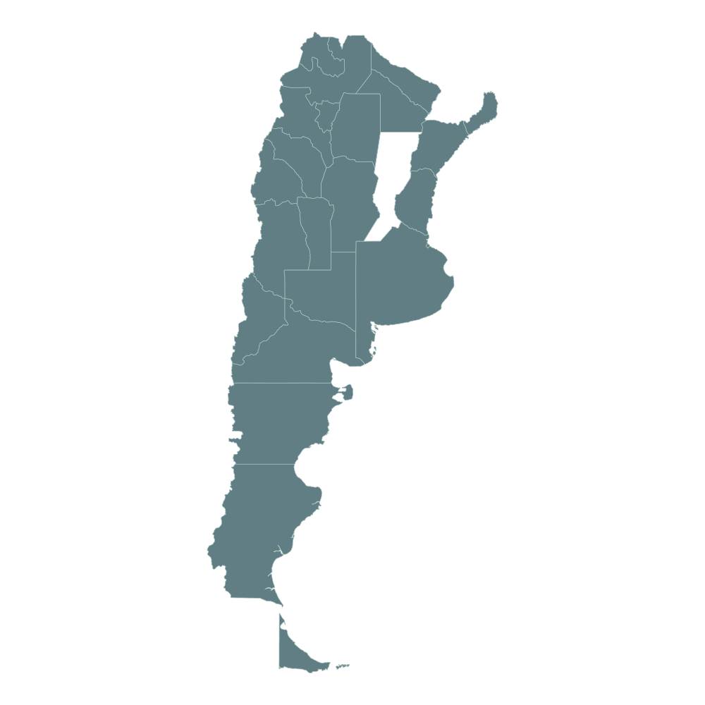

Tomás Daniel Flores — desarrollador web en Rosario, Santa Fe
Hola
Tomás Daniel Flores. Desarrollador web.
Sitios web
→
Sobre mi
→
Ejemplos
Trabajo en proceso
→
Contacto
→
←
VOLVER AL MENÚ

TOMÁS DANIEL FLORES
·
CLICK PARA EXPLORAR